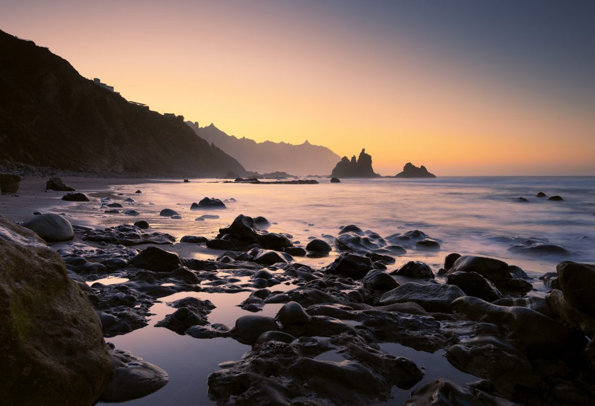
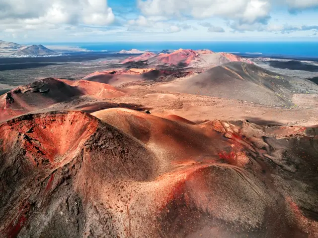
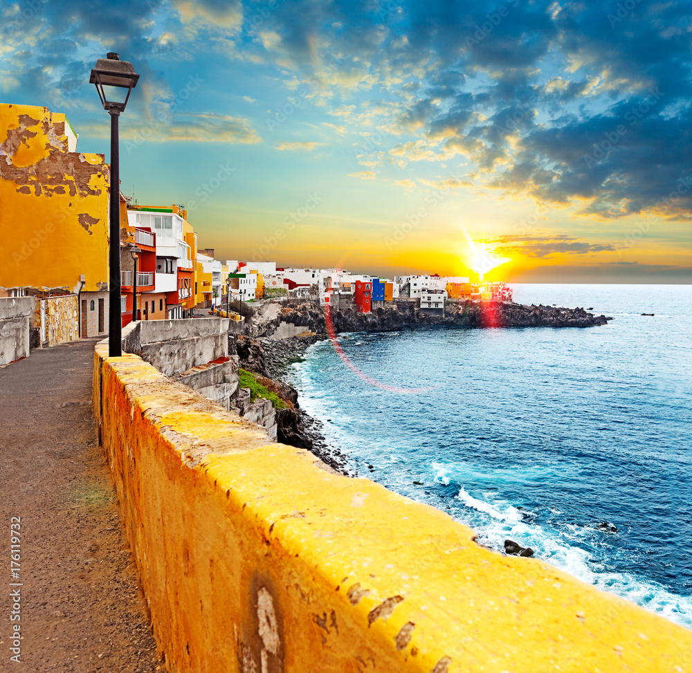
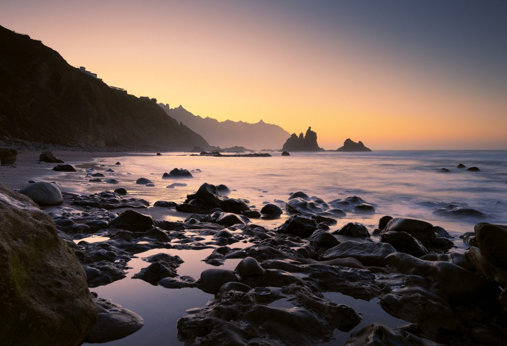
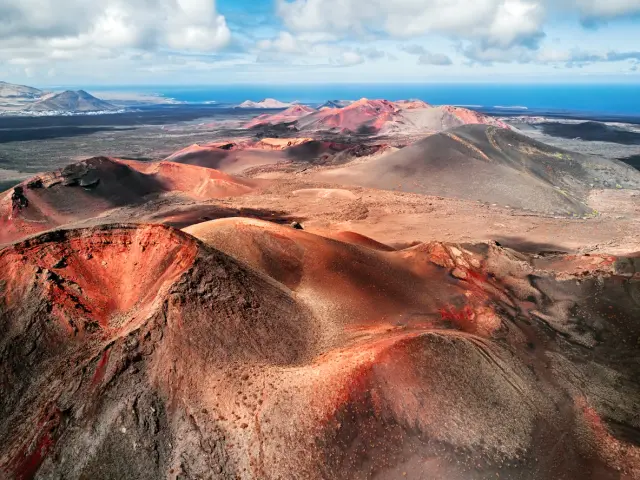
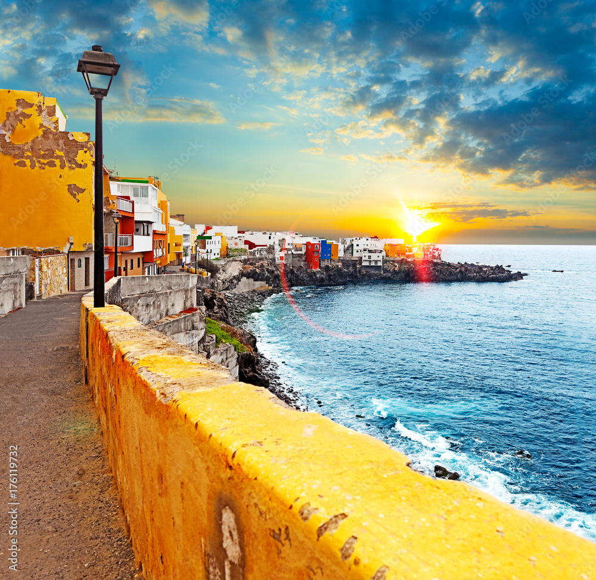

Conoce el Entorno
Imagina un rincón único de Tenerife donde la naturaleza se muestra en su forma más vibrante y auténtica. Los carrizales son joyas ecológicas, situadas en barrancos y áreas húmedas, donde el verde de los carrizos y otras plantas se entrelaza con el murmullo del agua que fluye lentamente. Son mucho más que paisajes hermosos: los carrizales son refugios de vida. Aquí habitan aves y fauna local, ofreciendo un espectáculo natural incomparable. Además, estos ecosistemas filtran y purifican el agua, contribuyendo al equilibrio ambiental de la isla. Visitar un carrizal es adentrarse en un mundo de tranquilidad, ideal para los amantes de la naturaleza, la fotografía o simplemente quienes buscan un lugar especial para desconectar. Su importancia para la conservación de Tenerife los convierte en un espacio perfecto para quienes valoran el turismo sostenible y desean conocer el lado más auténtico y oculto de la isla.


 




